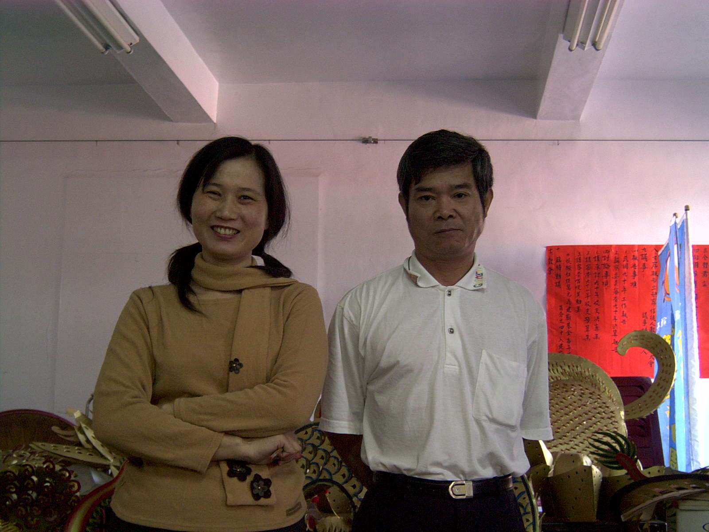
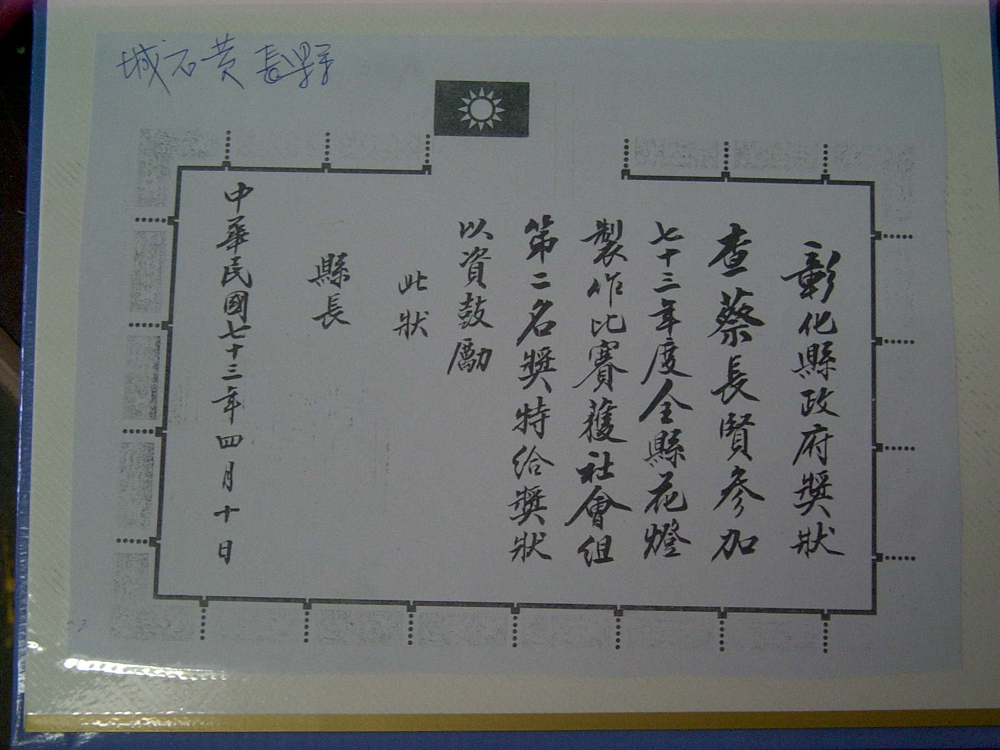
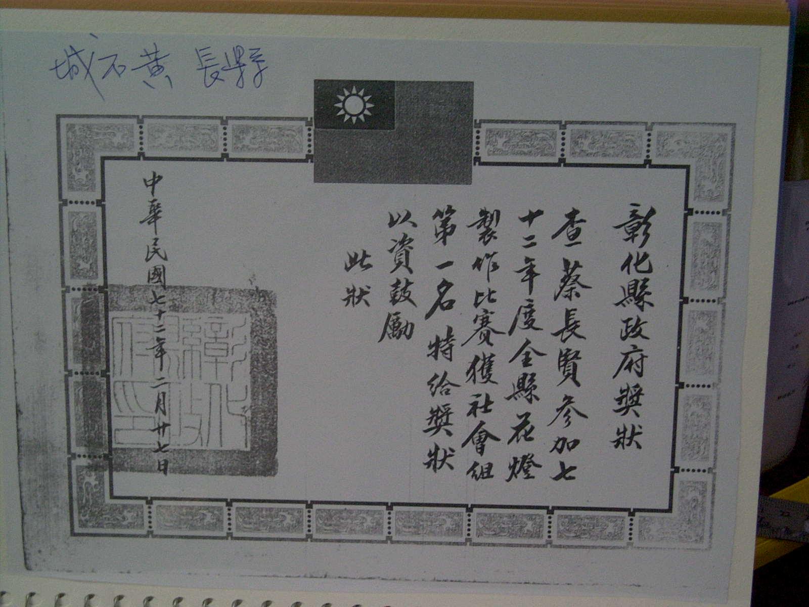

|
|
蔡長賢先生.施秀雅女士  蔡長賢先生幼小看廟宇的民俗活動,而現在在廟宇附近販賣蛋糕 年輕到現在都喜歡研究花燈的製做作,於民國七十二年參加彰化縣花燈 比賽之冠軍,次年參加穫得亞軍,因興趣和喜歡研究花燈,而幫忙新祖宮和 其它廟宇製作花燈,並和施秀雅女士研發以厚紙板為材料紙花燈並在今年 花費幾乎半年的時間製作， 鹿港燈會新祖宮紙雕花燈展以『龍生九子』 『十二生肖』為主題
 左圖 蔡長賢先生民國七十三年彰化縣花燈製作比賽社會組第二名  左圖 蔡長賢先生民國七十二年彰化縣花燈製作比賽社會組第一名
蔡長賢先生 電話：〈04〉7788971 住址：彰化縣鹿港鎮文開路32巷6號 施秀雅女士 電話： 0912306949 住址：彰化縣鹿港鎮沿海路63巷3號
|